Urgência e Emergência + UTI
BLS, ACLS, ATLS, PHTLS
Qual curso fazer, quanto custa e em que ordem
Cada material puxa para uma pós da ITH. Mande o que conversa com a dor do lead e use como gancho para apresentar o curso.
Qual curso fazer, quanto custa e em que ordem
Diluição, dose e gotejamento
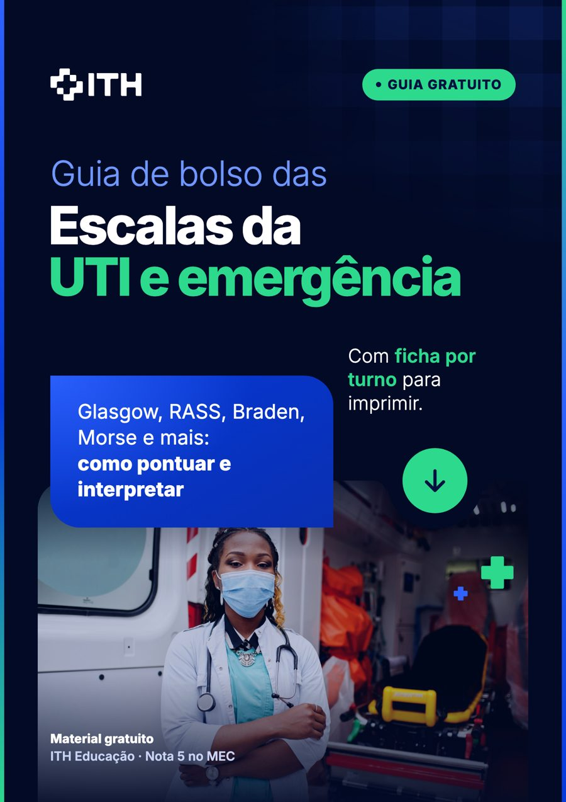
Glasgow, RASS, Ramsay, Braden, Morse, Cincinnati, NIHSS e qSOFA
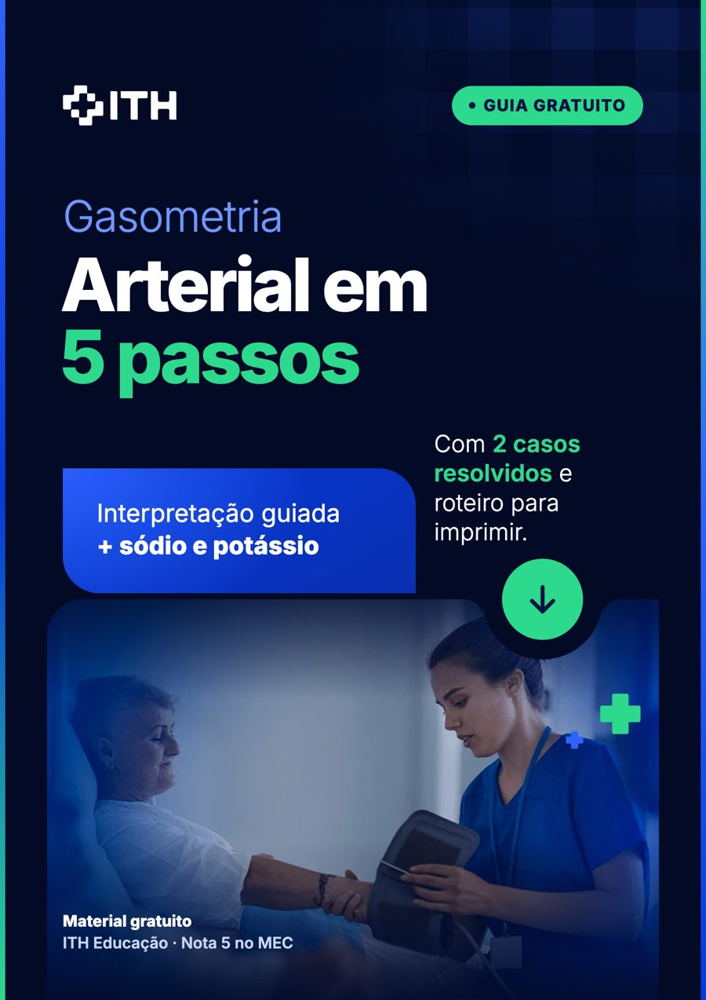
Valores, compensação, ânion gap, sódio e potássio
Piso, quanto ganha cada especialidade e onde UTI/emergência se encaixa
Direitos, escala, adicional noturno e como sobreviver ao plantão noturno
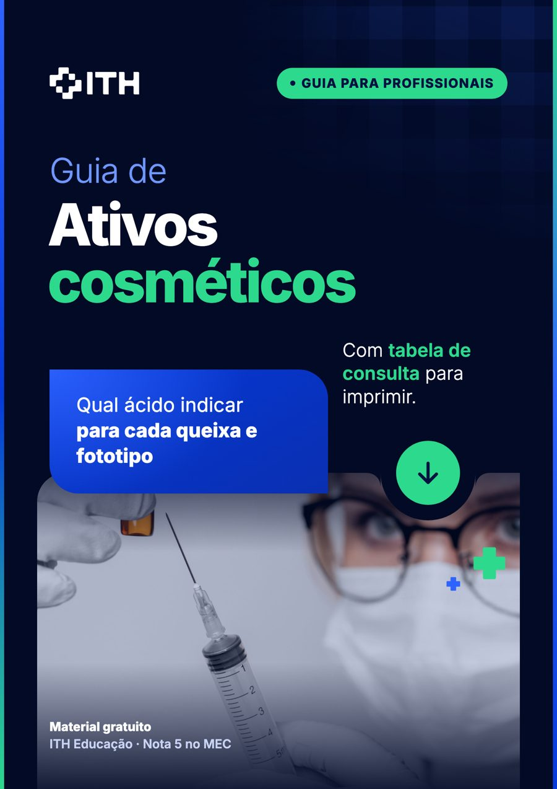
Qual ácido indicar para cada queixa e fototipo
Quem pode fazer o quê em cada profissão e quanto ganha
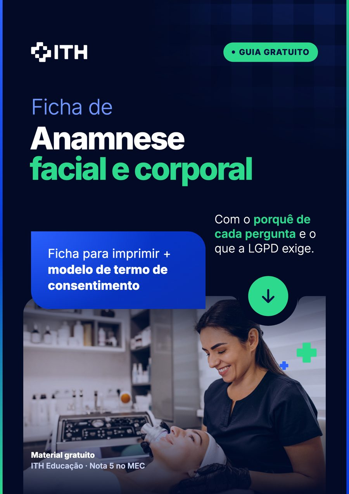
Avaliação, mMASI e pilares do tratamento
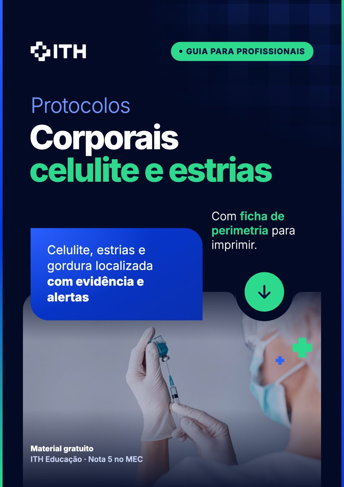
Celulite, estrias e gordura localizada, com evidência, alertas e quem pode fazer
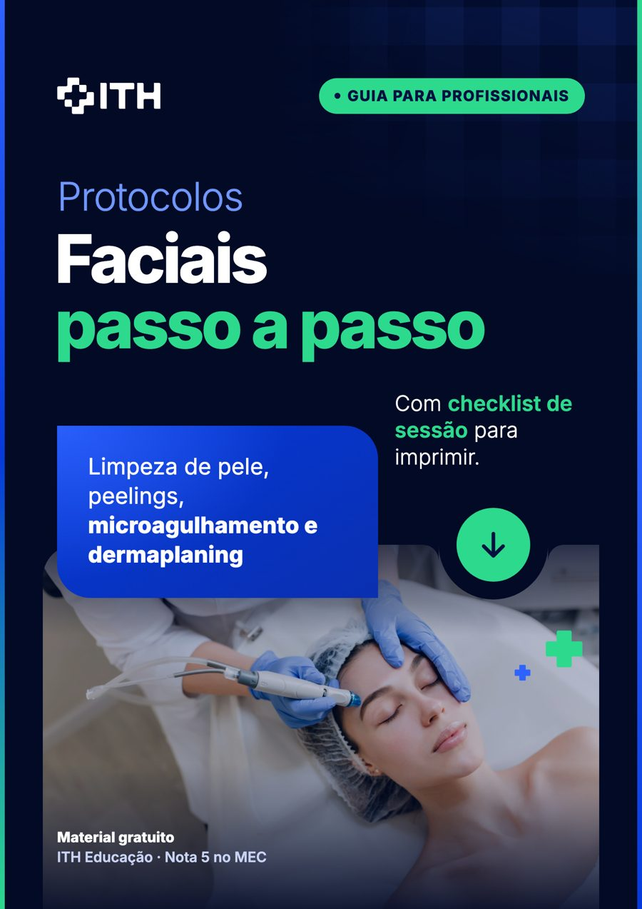
Limpeza de pele, peelings, microagulhamento e dermaplaning
Criolipólise, ultrassom microfocado, Lavieen (laser 1927 nm), jato de plasma e endolaser. Indicação e contraindicação para profissionais


Leite materno, sonda, parenteral e enterocolite, guia para a enfermagem

Apgar, Capurro, reanimação e hora de ouro, guia para a enfermagem

Guia dos testes do pezinho, orelhinha, coraçãozinho e olhinho para a enfermagem
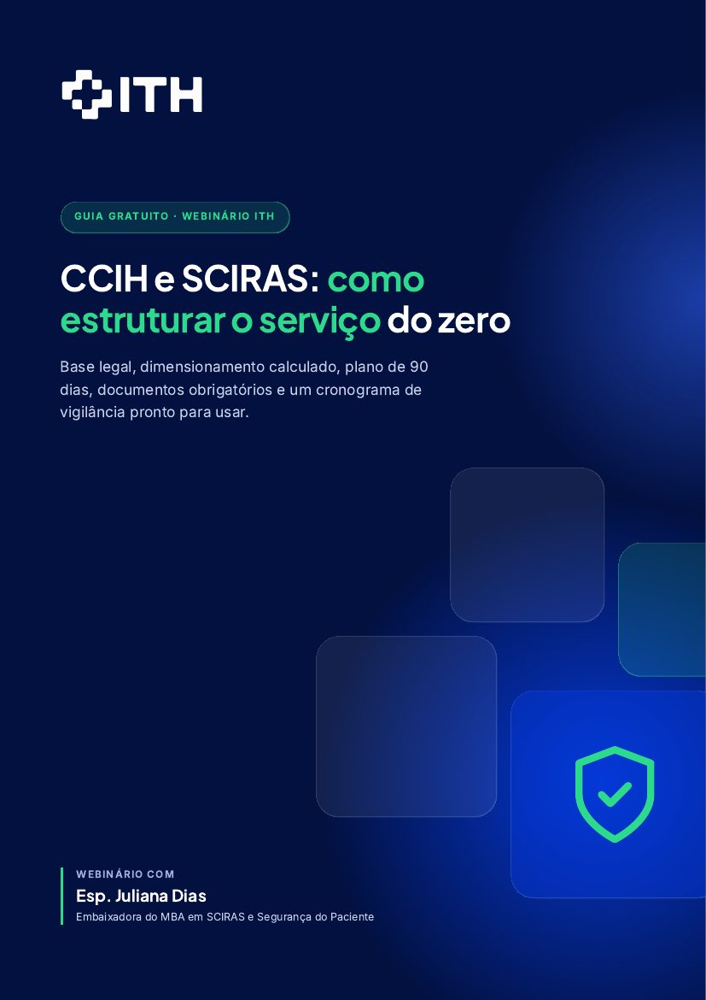
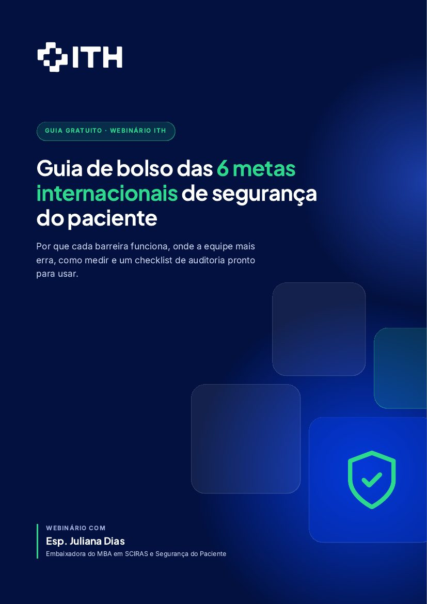
Da triagem ao pacote da primeira hora
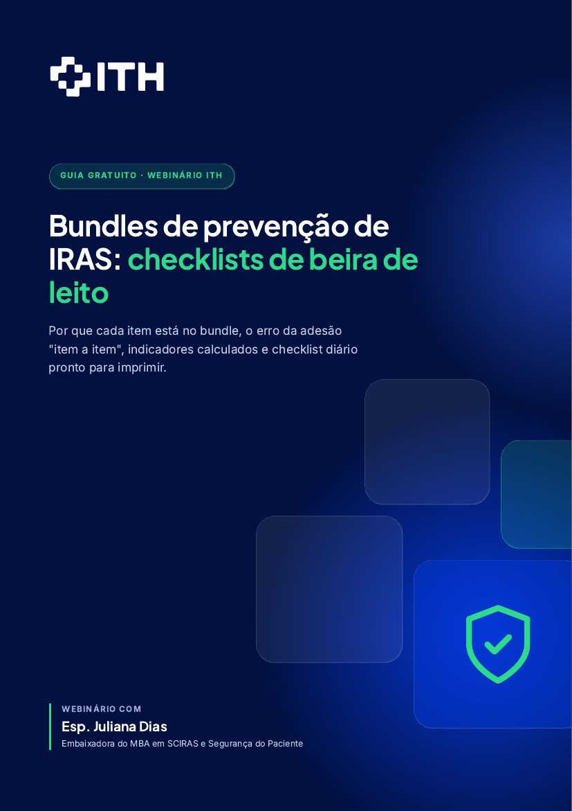
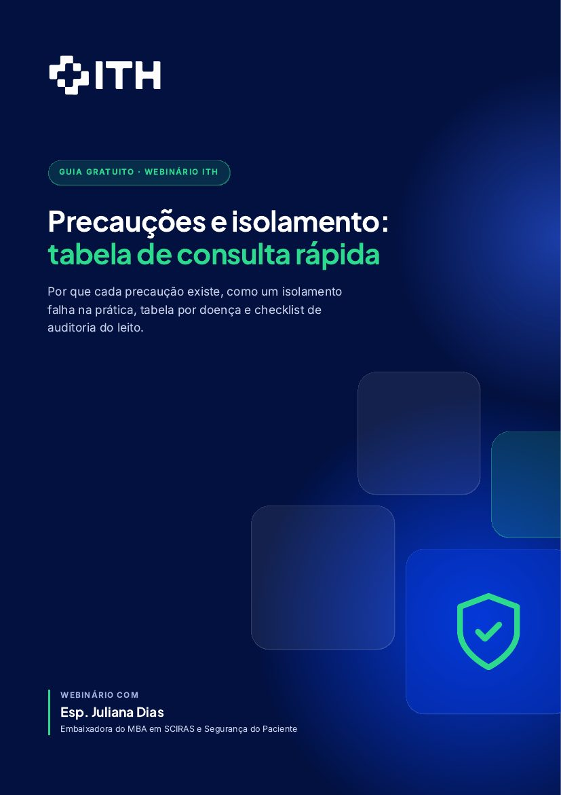
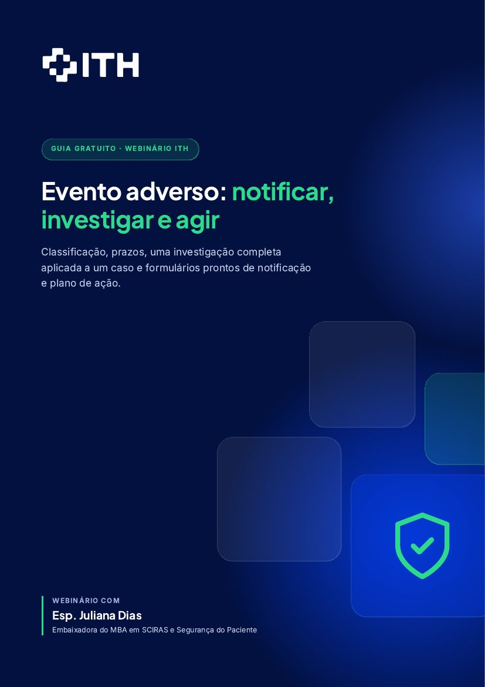
Nenhum ebook com esse tema. Limpe a busca ou troque o filtro.